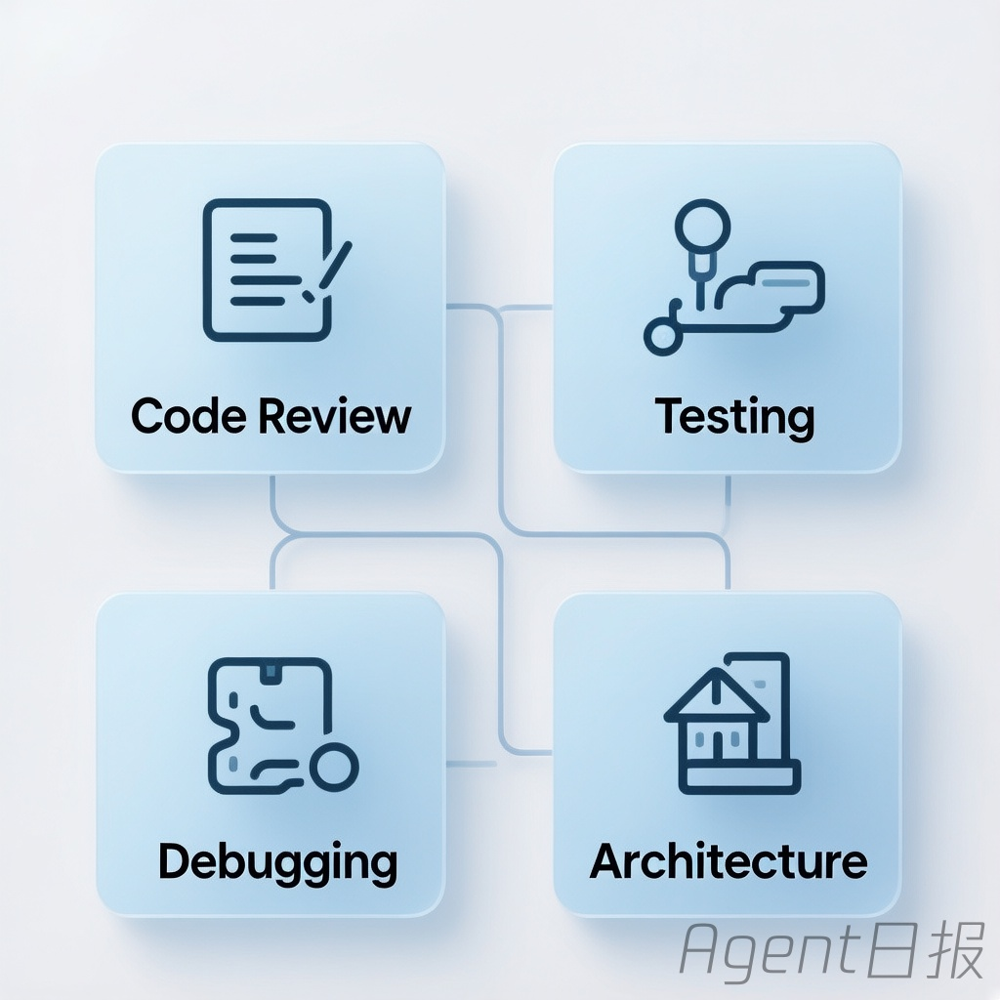
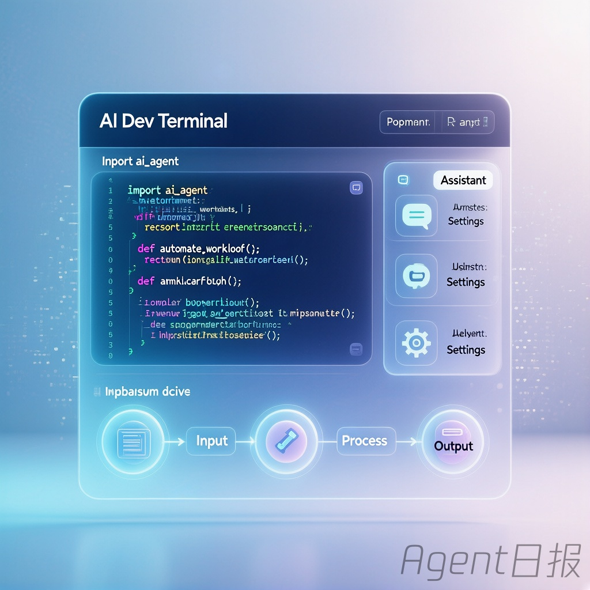

2026-05-02 | 数据来源：GitHub Trending
| 排名 | 仓库 | Stars | 今日新增 | 核心亮点 |
|---|---|---|---|---|
| 1 | mattpocock/skills | 53,555 | +3,645 | 真实工程师的Agent技能集 |
| 2 | warpdotdev/warp | 52,045 | +3,401 | Agentic开发环境 |
| 3 | TradingAgents | 60,560 | +2,112 | 多Agent LLM金融交易框架 |
| 4 | obra/superpowers | 176,027 | +1,096 | Agent技能框架与开发方法论 |
| 5 | 1jehuang/jcode | 2,519 | +403 | 极致性能编码Agent工具 |

Matt Pocock 的 Agent 技能集合，直接来源于他的 .claude 目录。针对 AI 编码 Agent 的四大故障模式（需求不对齐、冗余输出、缺乏反馈、代码腐化）提供 16+ 可组合技能，包括 /grill-me 需求对齐、/tdd 红绿重构循环、/diagnose 结构化调试等。核心理念：软件工程基本功在 AI 时代更重要。今日以 3,645 星增量稳居榜首。

诞生于终端的 Agentic 开发环境，Rust 构建（98.2%）。内置"Oz"编码 Agent，支持 Claude Code、Codex、Gemini CLI 等外部 Agent 接入，实现 Issue→Spec→Implement→PR 全自动 Agentic 工作流。双许可证模式（MIT + AGPL v3），OpenAI 创始赞助，提供可视化 Agent 监控面板。连续多日保持高位增长，今日新增 3,401 星。
🔗 GitHub链接多 Agent 协作 LLM 金融交易框架，模拟真实交易公司运作。四支专业团队协作：分析师团队（基本面、情绪、新闻、技术）→ 研究团队（看多/看空辩论）→ 交易员（综合决策）→ 风控与组合经理（风险审批）。支持 20+ LLM 提供商，Apache 2.0 开源，附 arXiv 论文。今日新增 2,112 星，总量突破 6 万。
🔗 GitHub链接经过真实工程验证的 Agent 技能框架和软件开发方法论，176,027 星稳居 Agent 领域第一。7 步结构化开发流程：头脑风暴→Git Worktrees 隔离→计划拆解→子 Agent 驱动开发→TDD 红绿重构→自动代码审查→分支收尾。核心理念：测试优先、系统化流程胜过临场发挥。支持 Claude Code、Codex、Cursor、Copilot、Gemini CLI 六大平台。
🔗 GitHub链接极致性能编码 Agent Harness，Rust 构建（94.2%）。性能碾压：启动速度快 42-245 倍，内存占用低 5-28 倍；语义记忆：基于向量的自动上下文召回系统；Swarm 多 Agent 协作：同仓库多 Agent 自动通知、冲突解决、消息广播；Self-Dev 模式：Agent 可修改自身源码实现无限定制。30+ LLM 提供商支持，技术路线极具前瞻性。
🔗 GitHub链接Skills 生态持续主导——mattpocock/skills 重夺榜首，与 obra/superpowers 形成"技能双雄"格局，Agent 技能框架正在从实验走向工程化标准
终端 Agent 化加速——Warp 将终端重构为 Agentic 开发环境，连续 5 天保持高增长，预示开发工具链全面 Agent 化
多 Agent 协作成标配——TradingAgents 和 jcode 均以多 Agent 协作为核心架构，单一 Agent 已无法满足复杂场景需求
性能成新战场——jcode 以极致性能切入，Agent 工具的启动速度和资源占用正成为用户选择的关键指标
方法论 > 工具——superpowers 的持续领跑证明，结构化的开发方法论比单纯的功能堆叠更有价值